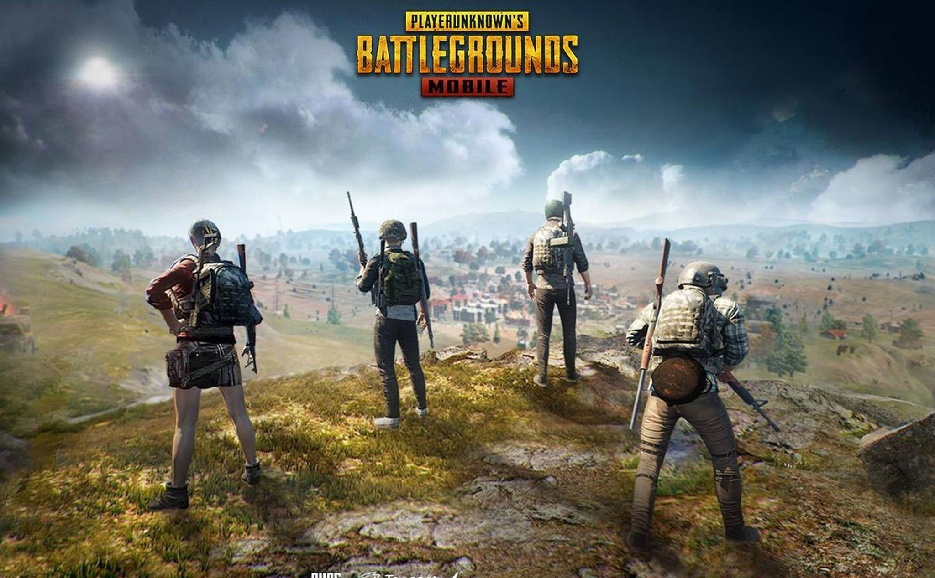
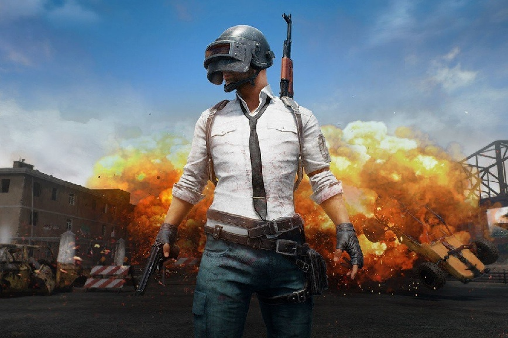

PUBG hay còn gọi là PlayerUnkown’s Battlegrounds. Đây là tựa game bắn súng sinh tồn được biết đến như thể loại game Battle Royale lấy cảm hứng từ bộ phim Battle Royale của Nhật Bản những trong khoảng năm 2000, được ra mắt bản Beta vào tháng 3 năm 2017 và được chính thức ra mắt vào tháng 12 cùng năm. Thời điểm được phát hành, PUBG được phát triển bởi PUBG Corp – chi nhánh của công ty Game Bluehole, Hàn Quốc và được xuất hiện chỉ ở trên nền tảng dành cho PC. Cho đến tháng 9 năm 2018, tựa game mới chính thức có phiên bản dành cho nền tảng di động iOS và Android, và tiếp tục cho đến năm 2019, tựa game này đã chính thức có mặt trên đủ các nền tảng từ PC, Android, iOS, và các hệ thống máy chơi game console như Xbox One hay PS4.
Trong game sẽ có hai chế độ: Solo cá nhân hoặc bắn theo đội. Với thể thức solo cá nhân, PUBG sẽ xoay quanh chính cuộc đối đầu của người chơi với 99 người chơi khác trên cùng một chiến trường. Người chơi sẽ phải tự đi tìm các trang bị, vũ khí, vật dụng cần thiết cho cuộc chiến sinh tồn. Với chế độ sinh tồn theo team, một team mặc định sẽ từ 2 người trở lên và tối đa sẽ có 4 người trong một team để có thể sinh tồn.
Trò chơi yêu cầu một kĩ năng phải thật khéo léo, thông minh và tận dụng tối đa các loại vũ khí của mình để trở thành người sống sót cuối cùng. Nếu chỉ như vậy thì có lẽ cũng chưa đủ khó, PUBG đã được thiết lập sẵn các chướng ngại vật là hình tròn giới hạn. Vì thế, bạn liên tục di chuyển không được cố định hay ẩn nấp một chỗ.
Không đơn thuần chỉ là tựa game bắn súng. Điểm ấn tượng nhất của trò chơi này là gamer phải khẳng định bản thân trước 99 game thủ khác. Ở PUBG, các thông tin như tên người chơi sẽ không hiện lên, sẽ không ai biết bạn là ai. Bước vào game mọi người chơi đều tương đương nhau đều có xuất phát điểm bằng 0 và được trao cơ hội giống nhau.
Mặt khác, PUBG mang tới cho người chơi nhiều cung bậc cảm xúc khác nhau. Là thích thú, vui sướng, gay cấn qua từng màn chơi. Trong đó, mỗi màn chơi được thiết kế bối cảnh không bao giờ lặp lại. Mở đầu và kết thúc màn chơi khác nhau, mở ra nhiều bối cảnh thú vị cho các game thủ.
Yếu tố đồ họa đẹp mắt, chân thực cũng là yếu tố giúp PUBG trở thành trò chơi bắn súng sống còn hay nhất và có thể xem là “sống thọ nhất” ở thời điểm hiện tại.
Cấu hình đề nghị mà nhà sản xuất đưa ra để người chơi có được trải nghiệm đồ hoạ của game tốt nhất bao gồm:
Đối với các thiết bị di động:
Android: Phiên bản 5.1.1 trở lên với 2GB RAM trở lên và dung lượng bộ nhớ trống 2GB
iOS: Các thiết bị iPhone 5s hoặc iPad 2 trở lên và sử dụng iOS 9 trở lên
Đây là băn khoăn của đại đa số những người mới biết đến cái tên PUBG. Khi mỗi trận đấu chính thức bắt đầu tức là lúc đồng loạt người chơi nhảy dù từ máy bay xuống khu vực bản đồ, tuỳ thuộc vào map bạn tham gia sẽ có những kích thước từ ô vuông với diện tích 4×4, 6×6, hay 8×8
Khi tiếp đất, bạn có thể tìm kiếm vũ khí, áo giáp, xe cộ, vật dụng giúp hồi máu khác ở các tòa nhà. Cụ thể, chất lượng tốt – kém của thiết bị còn phụ thuộc vào độ khó – dễ ở từng khu vực riêng.
Bạn sẽ được chọn góc bắn súng thứ nhất hoặc thứ ba khi chơi game. Mỗi góc nhìn có ưu và nhược điểm riêng. Khi hạ gục hoàn toàn được một người chơi, bạn có quyền lấy toàn bộ vũ khí và trang bị trên người họ. Với chế độ đồng đội, khi bạn bị hạ gục, những đồng đội khác có thể hồi sức cho bạn để có thể cùng nhau chiến đấu tiếp khác với việc bị bắn hạ ngay tức khắc khi chiến đấu solo cá nhân.
Qua khoảng thời gian nhất định được đếm lùi trên bản đồ, khu vực sinh tồn sẽ sẽ bắt đầu thu hẹp phạm vi lại. Khi đó, bất kỳ ai đang nằm ngoài khu vực này sẽ bị mất máu và sẽ bị hạ gục nếu không di chuyển vào trong khu vực sinh tồn kịp thời trong thời gian quy định.
Trong quá trình tham gia trận đấu sẽ có những khu vực bị đánh bom. Tuy nhiên, các khu vực bị đánh bom đều xuất hiện vùng màu đỏ trên bản đồ và bạn luôn sẽ có đủ thời gian cảnh báo để di chuyển vào phạm vi an toàn trước khi bom nổ. Ngoài ra, bạn sẽ thu nhận thêm được vật phẩm đặc biệt không thể tìm thấy ở bất kì vị trí nào ở trên bản đồ trừ trường hợp được máy bay thả xuống. Những vật phẩm đặc biệt đó được những game thủ ở Việt Nam vui vẻ gọi là “thính”, vì mỗi khi thùng “thính” được rơi xuống, sẽ có rất nhiều game thủ tập trung lại để có thể lấy được cho mình trang bị cấp độ cao ở trong thùng đó nên những người chơi mới phải rất thận trọng cũng như phải có phản xạ tốt để có thể tranh chấp thùng “thính” đó.
Thời gian chơi mỗi trận đấu sẽ kéo dài khoảng 30 phút. Hoàn thành xong trận đấu, số tiền bạn nhận được tính bằng số người đã giết, số sát thương bạn tạo ra. Với số tiền này, bạn có thể dùng để mua đồ dùng cá nhân như quần áo hay skin vũ khí tùy theo ý thích.
Dù là người mới hay đã quen với PUBG, cũng nên lưu ý một vài yếu tố sau để có trải nghiệm thú vị và lâu nhất: